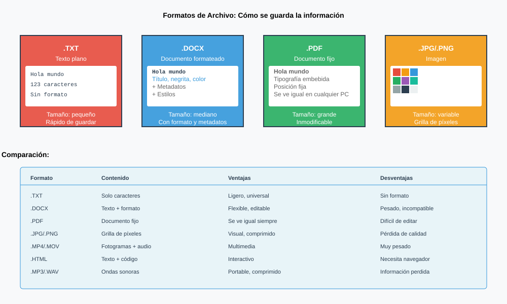
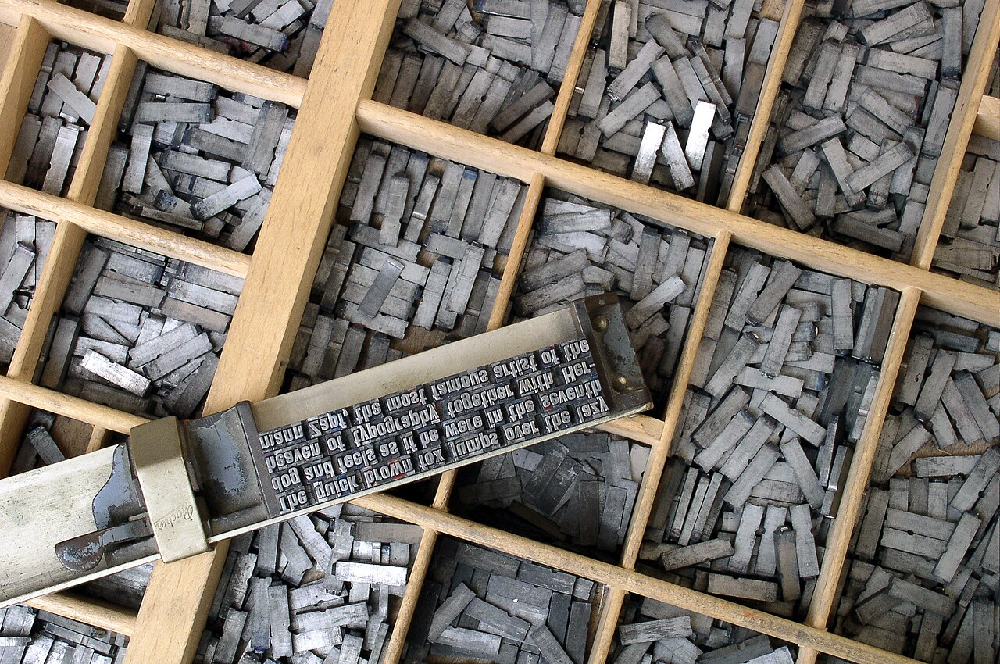
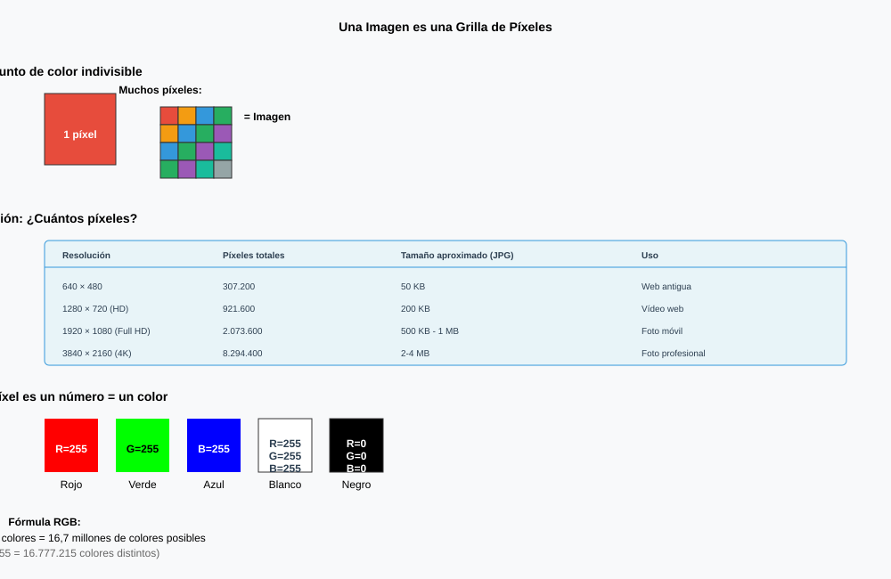
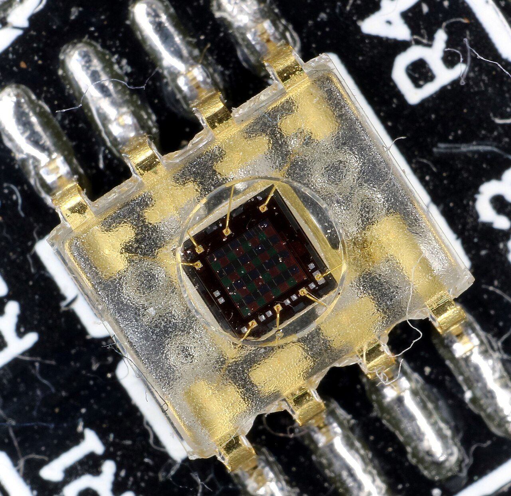
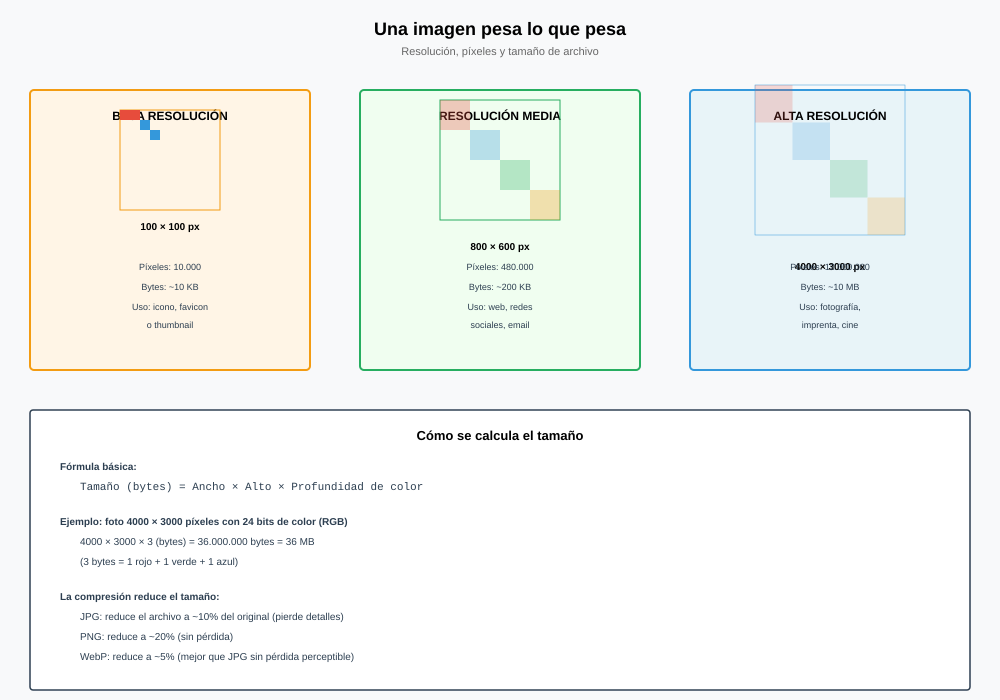
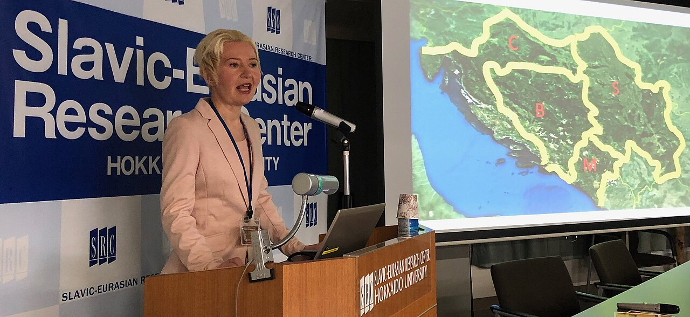
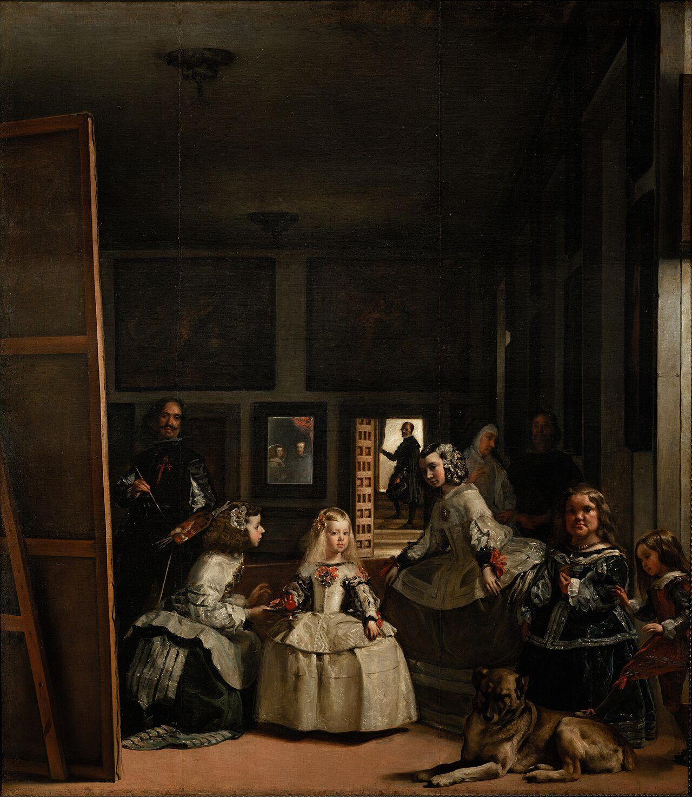
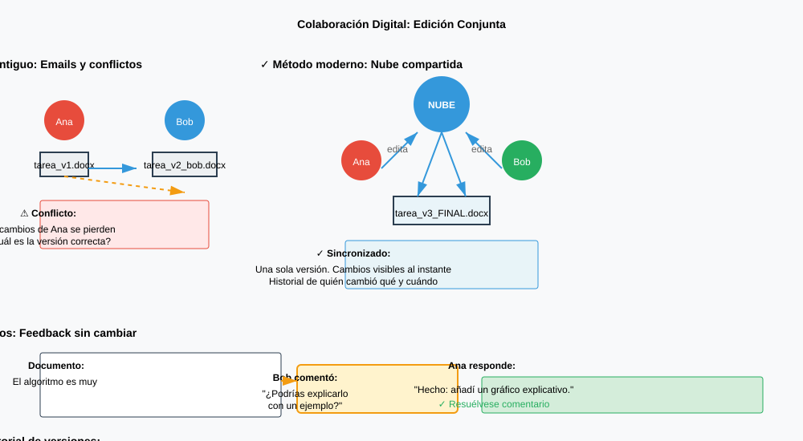
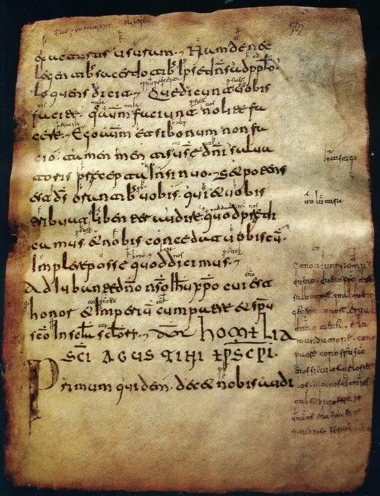
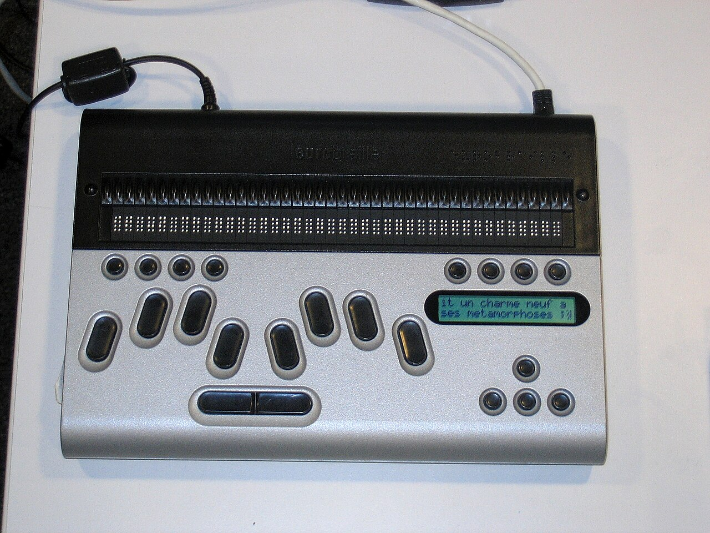

El documento que no se rompe
Un trabajo se descoloca al abrirlo en otro ordenador y no falta ni una palabra. La explicación reparte la unidad entera: lo que dice y cómo se ve son dos cosas.

De la unidad de internet sales sabiendo cómo llega a tu pantalla lo que pides y quién lo ve pasar por el camino. Todo eso lo mirabas tú. A partir de hoy le damos la vuelta a la pregunta: ya no eres el que mira, eres el que publica.
Y produciendo pasa una cosa que todo el mundo ha vivido.
De dónde sale esta unidad
Hasta ahora eras el que mira; a partir de aquí eres el que publicaVoz sintetizada sobre guión propio. La boca sigue el volumen real de la voz: se mueve cuando habla y se para en los silencios.
Las tres que salen siempre son estas: se ha corrompido el fichero, el programa del instituto es una versión vieja y lo guardé mal. Las tres suenan razonables y las tres son falsas, y hay una prueba que las tumba de golpe:
¿Falta alguna palabra? ¿Ha cambiado alguna letra? ¿Se ha perdido algún párrafo?
No. Está todo, entero y en orden. Si el fichero estuviera roto faltaría algo; si se hubiera guardado mal, también. Lo único que ha cambiado es cómo está repartido encima del papel.
Eso ya no es una avería: es una pista. Quiere decir que el fichero no guarda una foto de la página. Guarda otra cosa, y la página se vuelve a construir cada vez que alguien lo abre. Si se construye otra vez, se construye con lo que haya en ese ordenador. Y ahí está el lío.
Lo mismo, y sin embargo distinto
Abajo tienes el mismo documento en dos ordenadores. El de la izquierda es donde lo escribiste y no se toca. En el de la derecha cambia la letra, el papel y el cuerpo, y fíjate en tres cosas: cuántas líneas salen, cuántas hojas, y en qué hoja acaba la segunda foto.
Ninguna palabra se ha movido de sitio en el fichero. Lo que se mueve es el dibujo, porque el dibujo se hace en el último momento.
La idea que ordena toda la unidad
Un documento guarda dos cosas distintas, y conviene no mezclarlas:
- Lo que dice: las letras, las palabras, y qué papel hace cada trozo —esto es un título, esto es un párrafo, esto es un pie de foto—.
- Cómo se ve: con qué tipo de letra, de qué tamaño, con cuánto margen, en qué papel.
Lo primero viaja dentro del fichero. Lo segundo lo decide el programa al abrirlo, con lo que tenga ese ordenador. Por eso el mismo fichero se ve distinto en dos sitios sin que nadie lo haya estropeado.
Esto no lo inventó el ordenador
Separar lo que un texto dice de la forma que tiene encima del papel es una idea vieja. Un escriba copiaba las dos cosas a la vez: cada letra que dibujaba era, al mismo tiempo, el contenido y su forma. Con los tipos móviles eso se parte en dos oficios: uno compone las palabras y otro decide con qué tipos se imprimen.

Tres maneras de guardar un texto
Formatos de fichero
Formato: la manera acordada de ordenar los bytes dentro de un fichero para que otro programa sepa leerlos. La extensión del nombre —.txt, .odt, .pdf— solo es una etiqueta que avisa de cuál es.
| Familia | Qué guarda | Para qué sirve |
|---|---|---|
| Texto plano (.txt, .csv) | Solo las letras, una detrás de otra. Nada más. | Lo abre cualquier cosa y durará siempre. No tiene títulos ni negritas. |
| Documento con marcas (.odt, .docx) | Las letras y las marcas que dicen qué papel hace cada trozo. | Para escribir y seguir cambiando. Se redibuja al abrirlo. |
| Página fija (.pdf) | Dónde va cada letra, y las letras mismas metidas dentro. | Para entregar. Se ve igual en todas partes; cuesta editarlo. |
Un fichero .odt o .docx no es un bloque mágico: es una carpeta comprimida. Si le cambias la extensión a .zip y lo abres, dentro hay ficheros de texto con el contenido por un lado y el aspecto por otro. Lo vais a hacer en la práctica, y es la manera más rápida de creerse todo lo de hoy.
El de .odt se llama OpenDocument, y es una norma pública desde 2006: cualquiera puede leer cómo está hecho y escribir un programa que lo abra. Eso importa más de lo que parece cuando el trabajo que quieres recuperar tiene quince años y el programa con el que lo hiciste ya no existe.
Marcar no es pintar
Aquí está el hábito que hay que cambiar. Casi todo el mundo hace los títulos así: seleccionar, negrita, subir el tamaño, centrar. El resultado parece un título. Pero el programa no ha entendido que sea un título: para él sigue siendo texto normal que resulta que está en negrita.
Compruébalo. En la escena de abajo, pide el índice de las dos maneras.
Estilo
Estilo: una etiqueta que le pones a un trozo de texto para decir qué es —Título 1, Título 2, Normal, Cita—. El aspecto de cada etiqueta se define una sola vez, aparte.
De ahí salen tres cosas que a mano no se pueden hacer:
- El índice se genera solo, con sus números de página, y se actualiza cuando el documento crece.
- Cambiar el aspecto de todos los títulos cuesta un retoque, no uno por título.
- Un lector de pantalla —lo que usa una persona ciega— puede ir saltando de apartado en apartado. Si no hay estilos, no hay apartados a los que saltar.
Regla corta: marcar lo que algo es, no pintar lo que parece.
El paquete completo, y el que no has tocado todavía
Un paquete de ofimática —LibreOffice, Microsoft Office, Google Docs— no es un programa: son varios que se parecen por fuera y hacen cosas distintas.
| Programa | Para qué | En LibreOffice |
|---|---|---|
| Procesador de textos | Escribir documentos: cartas, guiones, trabajos | Writer |
| Hoja de cálculo | Hacer cálculos y representarlos en gráficos | Calc |
| Presentaciones | Exponer información con diapositivas | Impress |
| Gestor de bases de datos | Crear, consultar y modificar datos | Base |
| Planificador de tareas | Anotar citas y trabajos pendientes | — |
La hoja de cálculo: una tabla que se calcula sola
Una hoja de cálculo es una cuadrícula de celdas. Cada celda tiene una dirección, que es su columna y su fila: B4 es la columna B, fila 4. Y en una celda puedes poner tres cosas distintas:
- Un número o un texto, tal cual.
- Una fórmula, que empieza siempre por = y se calcula sola: =B4*2.
- Una función, que es una fórmula con nombre: =SUMA(B4:B15), =PROMEDIO(B4:B15), =MAX(B4:B15).
Una fórmula no guarda el resultado, guarda el cálculo. Si cambias el número de la celda B4, todo lo que dependía de B4 se recalcula solo. Por eso una hoja de cálculo no es una calculadora con cuadros: es lo que te permite preguntar «¿y si…?» veinte veces sin repetir una sola cuenta.
Y de ahí salen los gráficos. Se seleccionan los datos, se elige el tipo —de líneas para ver cómo cambia algo con el tiempo, de barras para comparar, de sectores para repartir un total— y el gráfico queda enlazado a los datos: si cambias un número, el dibujo cambia con él.
Horas de sol a lo largo de los meses: líneas, porque hay una secuencia. Qué deporte practica cada grupo: barras, porque se comparan cosas sueltas. De qué está hecha la basura de casa: sectores, porque todo suma cien. Un gráfico mal elegido no es un adorno feo: cuenta mal el dato.
Plantillas: el documento que ya viene hecho
Una plantilla es un documento con el formato ya decidido —márgenes, estilos, logotipo, tablas— que se abre como copia. Tú rellenas y no tocas el diseño. Es la misma idea de los estilos de antes, pero llevada al documento entero: decidir el aspecto una vez y reutilizarlo.
Y entonces, ¿por qué el PDF se ve igual?
Porque hace justo lo contrario, y a propósito. Un PDF no deja nada por decidir: ya lleva calculada la posición de cada letra, y además se lleva las letras dentro, incrustadas, para no depender de las que tenga el ordenador de enfrente. Vuelve a la escena de arriba y pulsa «Mandarlo en PDF»: los botones siguen funcionando y la hoja ya no se mueve.
PDF (formato de documento portátil): un formato que guarda la página ya maquetada —posiciones y tipografías incluidas—, en vez de guardar el texto y dejar que se redibuje.
Lo que ganas: se ve igual en cualquier sitio y se imprime igual. Es el formato para entregar.
Lo que pierdes, y hay que saberlo:
- Editarlo cuesta: está pensado para leerse, no para seguir escribiéndolo. El original se guarda aparte.
- No se adapta a una pantalla pequeña: en el móvil hay que hacer zoom, porque la página es fija por definición.
- Si se hace mal —por ejemplo escaneando papel—, dentro no hay texto sino una foto: no se puede buscar ni copiar, y un lector de pantalla no puede leerlo.
Los tipos móviles no son de Gutenberg: en China ya los usaba Bi Sheng hacia 1040, de cerámica, y el libro impreso con tipos de metal más antiguo que se conserva es coreano, el Jikji, de 1377. Lo que Gutenberg montó en Maguncia hacia 1450 fue el sistema entero: la aleación para fundir tipos iguales miles de veces, la tinta que agarraba en el metal y una prensa que apretaba fuerte y parejo.
El PDF es mucho más reciente. Lo sacó la empresa Adobe en 1993, y al principio había que pagar por el programa que lo leía. Les fue mal: nadie manda un fichero que el otro no puede abrir. Cuando regalaron el lector, el formato se comió el mundo. En 2008 dejó de ser suyo y pasó a ser una norma internacional (ISO 32000), o sea, de nadie. Esa es la razón de fondo por la que hoy puedes mandar un PDF a cualquiera sin preguntar qué tiene instalado.
Un minuto y medio para fijar por qué se manda en PDF lo que tiene que verse igual en todas partes. El vídeo no se carga hasta que lo pulsas, y se reproduce sin cookies de seguimiento. Si no se ve aquí —porque la red del centro bloquee YouTube o porque ese vídeo no se deje empotrar—, ábrelo directamente aquí. El vídeo es de su autor y no forma parte del material publicado bajo la licencia de esta página.
Qué hay que hacer
- El mismo párrafo, dos veces. Copiad un párrafo cualquiera de esta página en un editor de texto plano y guárdadlo como .txt. Pegadlo también en el procesador y guardadlo como .odt. Anotad lo que ocupa cada fichero y contestad: si el texto es el mismo, ¿qué hay en la diferencia?
- Abrid el documento por dentro. Haced una copia del .odt, cambiadle la extensión a .zip y abridlo. Apuntad cuántos ficheros hay dentro y cómo se llaman. Buscad en cuál está vuestro texto y en cuál está el aspecto. Una frase: ¿por qué están en ficheros distintos?
- Estilos. Escribid un documento con seis apartados (basta una línea de relleno en cada uno). Marcad los títulos con el estilo Título 1 y Título 2, y generad el índice automático. Después cambiad el estilo Título 1 —otra letra y otro color— y contad cuántos retoques os ha costado.
- La cuenta de lo que costaría a mano. Cronometrad lo que tardáis en cambiarle el aspecto a dos títulos a mano. Multiplicad por los títulos que tendría un trabajo de treinta páginas (contad unos dos por página) y decid el resultado en minutos.
- La escena, con números. En la escena de las dos hojas, anotad las líneas y las hojas con Helvetica 11 pt en A4 y con Courier 14 pt en Carta. Calculad en qué porcentaje aumentan las líneas, y decid en qué hoja cae la segunda foto en cada caso.
- Entregadlo en PDF. Exportad el documento del paso 3 a PDF, abridlo y contestad a dos preguntas: ¿funciona el índice como enlaces? ¿Se puede buscar una palabra dentro? Y la importante: ¿qué habéis perdido al exportar?
Cómo se evalúa
- Los dos tamaños están anotados y la explicación de la diferencia habla de marcas, no de «el programa ocupa más» (2 puntos).
- El .odt se ha abierto por dentro y se distingue dónde está el texto de dónde está el aspecto (2 puntos).
- El índice automático funciona y el cambio de estilo se ha hecho desde el estilo (2 puntos).
- Las dos cuentas —los minutos a mano y el porcentaje de la escena— están bien hechas y con unidades (2 puntos).
- La respuesta sobre el PDF dice qué se gana y qué se pierde, sin quedarse en «es mejor» (2 puntos).
Vuelve a las tres explicaciones que escribiste al principio. Ninguna hacía falta: no había avería. Había un documento que se vuelve a dibujar cada vez, y un aspecto que estaba pegado a mano en vez de estar dicho con estilos.
- El mismo fichero se ve distinto en dos ordenadores y no falta ni una palabra. ¿Qué ha pasado?
Ver respuesta
Que el fichero no guarda una foto de la página: guarda el texto y sus marcas, y la página se redibuja al abrirlo con lo que ese ordenador tenga. Si la letra es otra, las palabras ocupan otra cosa, las líneas cortan por otro sitio y todo lo de abajo se mueve. No se ha estropeado nada.
- Pones un título en negrita y más grande, pero el índice automático sale vacío. ¿Por qué?
Ver respuesta
Porque le has cambiado el aspecto y no le has dicho qué es. Negrita y tamaño son pintura; el programa solo ve texto normal. Para que sea un título hay que marcarlo con un estilo, y entonces el programa ya sabe qué meter en el índice —y un lector de pantalla, por dónde saltar—.
- ¿Cuándo se manda un PDF y cuándo NO?
Ver respuesta
Se manda en PDF lo que está terminado y tiene que verse igual en todas partes: la entrega, el cartel, el documento que se imprime. No se manda en PDF lo que aún hay que seguir escribiendo o lo que otra persona tiene que retocar, porque editarlo cuesta. El original se guarda siempre aparte.
Lectura del tema
Una sesión entera dedicada a leer y contestar. 30 párrafos numerados: cada uno lee el suyo en voz alta, en orden. Después, diez preguntas por escrito.
Una imagen pesa lo que pesa
Una foto de móvil son 35 MB en bruto y el fichero dice 3. Entre esas dos cifras están la rejilla de píxeles, la compresión y la diferencia entre guardar casillas y guardar instrucciones.

El grupo termina la presentación: catorce diapositivas y once fotos. Al ir a subirla, el aviso de siempre: 48 MB, demasiado. Y lo raro es que ahí dentro no hay 48 MB de ideas.
Haz la cuenta tú, que no tiene truco. Una cámara de móvil corriente hace fotos de 4.032 × 3.024 puntos. Cada punto guarda su color, y un color se guarda en 3 bytes —uno de rojo, uno de verde y uno de azul—:
1. 4.032 × 3.024 = 12.192.768 puntos. Eso es lo que quiere decir «12 megapíxeles»: doce millones de puntos.
2. 12.192.768 × 3 = 36.578.304 bytes, o sea unos 35 MB. Una sola foto.
Y ahora mira lo que dice tu móvil que ocupa esa foto. Suele poner entre 2 y 4 MB. Sobran unos 32. ¿Dónde están?
Esa pregunta es la sesión entera, y tiene dos respuestas: una se llama compresión y la otra es que a lo mejor no hacían falta.
Antes, la solución que intenta todo el mundo con la presentación de 48 MB: arrastrar la esquina de la foto para hacerla pequeña. Prueba a hacerlo y vuelve a mirar lo que ocupa el fichero. Lo mismo. No has cambiado la foto: has cambiado cómo se dibuja. Es exactamente el error de la sesión anterior, otra vez: confundir lo que una cosa es con lo que parece.
Una foto es, literalmente, una rejilla
No es una metáfora. Detrás del objetivo del móvil hay una rejilla de casillas diminutas, cada una con un filtro de color delante, y cada casilla mide cuánta luz le llega. La foto es la lista de esas medidas.

Guardar una rejilla tiene una consecuencia incómoda que se ve mejor ampliando. A la izquierda de la escena hay un símbolo guardado como casillas; a la derecha, el mismo símbolo guardado como instrucciones de dibujo. Acerca los dos.
Mapa de bits y vectorial
Mapa de bits: la imagen es una rejilla de píxeles, y de cada uno se guarda su color. Es lo que sale de una cámara o de un escáner. Formatos: JPEG, PNG, WebP.
Vectorial: la imagen es una lista de instrucciones —una circunferencia de tal radio aquí, una línea hasta allí, rellena de este color—. Se vuelve a dibujar cada vez, al tamaño que haga falta. Formato: SVG.
| Mapa de bits | Vectorial | |
|---|---|---|
| Al ampliar | Salen las casillas: no hay más detalle guardado | Se redibuja y sigue fino, a cualquier tamaño |
| Lo que pesa | Depende de cuántos píxeles tenga | Depende de cuántas instrucciones, no del tamaño |
| Sirve para | Fotografías | Logotipos, iconos, planos, esquemas, letras |
| No sirve para | Un logotipo que hay que ampliar | Una fotografía |
Por qué una foto no puede ser vectorial: haría falta una instrucción por cada mancha de color, y en una cara hay millones que no se parecen a ningún círculo ni a ninguna recta. Por qué un logotipo no debería ser un mapa de bits: porque un logotipo acaba en un carné y en una pancarta, y solo uno de los dos cabe en la rejilla que guardaste.
Medido, no estimado
El símbolo de la escena, guardado de las dos maneras:
| Guardado como | Ocupa |
|---|---|
| SVG (instrucciones), a cualquier tamaño | 244 bytes |
| PNG de 64 × 64 | 365 bytes |
| PNG de 256 × 256 | 1.559 bytes |
| PNG de 1.024 × 1.024 | 6.426 bytes |
| PNG de 2.048 × 2.048 | 15.254 bytes |
El vectorial pesa lo mismo siempre. El mapa de bits, para el mismo dibujo y a gran tamaño, sesenta y dos veces más.
Una imagen no tiene tamaño: tiene píxeles
Esta frase es la que arregla la presentación de 48 MB. Preguntar «¿cuántos centímetros mide esta foto?» no tiene respuesta hasta que alguien decide cuántos píxeles pone en cada centímetro. Y lo que se ve en una diapositiva proyectada son, como mucho, 1.920 × 1.080: eso es todo lo que puede enseñar el proyector.
Resolución y destino
Píxeles: cuántos puntos tiene la imagen. Es lo único que lleva dentro el fichero.
Puntos por pulgada (ppp): cuántos píxeles decides poner en cada pulgada al imprimir. De ahí sale el tamaño en centímetros, y no antes.
Los tres destinos que hay que saberse:
- Diapositiva o pantalla: 1.920 píxeles de ancho y ni uno más.
- Impresión: unos 300 ppp. Una A4 entera son 2.480 × 3.508.
- Miniatura en una web: unos pocos cientos de píxeles.
Todo lo que lleves por encima de eso ocupa, viaja y tarda, y no lo ve nadie.
Comprimir: tirar lo que no se nota
Faltan los 32 MB del principio. Comprimir es guardar lo mismo ocupando menos, y hay dos maneras muy distintas de hacerlo.
Compresión sin pérdida y con pérdida
Sin pérdida (PNG): se aprovecha que hay cosas repetidas —doscientos píxeles blancos seguidos se guardan como «doscientos blancos»—. Al abrirla sale exactamente la misma imagen. Funciona muy bien con dibujos y capturas de pantalla, que tienen zonas planas, y muy mal con fotos.
Con pérdida (JPEG): se tira información de la que el ojo no se entera, sobre todo los cambios de color muy finos. Al abrirla sale una imagen parecida, no la misma. Funciona muy bien con fotos.
Consecuencia que casi nadie sabe: cada vez que guardas un JPEG otra vez, vuelve a tirar. Reguardar veinte veces la misma foto la estropea de verdad. Con PNG, no.
Medido sobre la foto de la caja de tipos de la sesión anterior, la que está en esta misma web (1.280 × 850): en bruto son 3.264.000 bytes; el fichero que servimos ocupa 437.940. Razón: 7,5 a 1. Con la calidad más baja bajaba a 164.789 bytes —casi 20 a 1—, pero ahí ya se ve sucia.
La misma foto guardada en PNG, que no tira nada, ocupa 2.412.762 bytes: apenas ahorra. Esa es la prueba de por qué las fotos van en JPEG y los dibujos en PNG, y no al revés.
¡Ojo con el número! La razón de compresión depende de la foto: una pared lisa se comprime muchísimo mejor que una multitud. Por eso aquí se dice sobre qué foto está medido, en vez de dar una cifra general que no significaría nada.
El JPEG es de 1992 y el PNG, de 1996. El PNG nació con prisa, como recambio libre de un formato anterior cuya compresión resultó estar patentada: de un día para otro, usarlo en un programa podía costar dinero. No es una anécdota: es la misma razón por la que en la sesión anterior interesaba que un formato fuera una norma pública y no propiedad de alguien.
Un minuto, del mismo canal que el vídeo del PDF, para fijar la distinción. El vídeo no se carga hasta que lo pulsas, y se reproduce sin cookies de seguimiento. Si no se ve aquí —porque la red del centro bloquee YouTube o porque ese vídeo no se deje empotrar—, ábrelo directamente aquí. El vídeo es de su autor y no forma parte del material publicado bajo la licencia de esta página.

Qué hay que hacer
- La cuenta en bruto. Mirad en los datos de una foto vuestra —o de una del aula— cuántos píxeles tiene de ancho y de alto. Calculad los píxeles totales y el peso en bruto (× 3 bytes). Pasadlo a MB.
- La razón de compresión. Anotad lo que ocupa el fichero de verdad y dividid: peso en bruto ÷ peso del fichero. Esa es la razón de compresión de esa foto. Comparadla con la de otra pareja y escribid una frase explicando por qué no os sale lo mismo.
- A dieta. Redimensionad la foto a 1.920 píxeles de ancho y guardadla con calidad media. Anotad el peso nuevo y calculad el porcentaje ahorrado. Miradlas después las dos a pantalla completa: ¿se nota la diferencia?
- Lo que sobra, con la escena. Con la escena de los píxeles, anotad qué porcentaje sobra de una foto de 12 Mp para los tres destinos. Y contestad: para imprimirla en A4, ¿sobra o falta?
- Un logotipo, de las dos maneras. Dibujad un símbolo sencillo —dos o tres figuras— en un editor de dibujo, y guardadlo en SVG y en PNG de 1.000 píxeles. Anotad los dos pesos, ampliad los dos al 800 % y describid lo que veis. Abrid además el SVG con un editor de texto y pegad en el cuaderno las tres primeras líneas.
- La presentación. Con lo anterior, calculad cuánto ocuparía una presentación de once fotos antes y después de la dieta, y decid si cabe en un correo (el límite habitual son 25 MB).
Cómo se evalúa
- El peso en bruto está bien calculado, con unidades (2 puntos).
- La razón de compresión está bien y la frase explica que depende de la foto (2 puntos).
- El porcentaje ahorrado al redimensionar está bien y va acompañado de la comparación mirando las dos (2 puntos).
- Los datos de la escena están tomados de los tres destinos y la respuesta de la A4 distingue sobrar de faltar (2 puntos).
- El logotipo está guardado de las dos maneras, con los dos pesos y lo que se ve al ampliar (2 puntos).
- Arrastras la esquina de una foto en la diapositiva para hacerla pequeña. ¿Pesa menos el fichero?
Ver respuesta
No. Has cambiado cómo se dibuja, no lo que hay guardado: los doce millones de píxeles siguen ahí enteros. Para que pese menos hay que redimensionar de verdad, o sea, tirar píxeles. Es el mismo lío de la sesión anterior: confundir lo que una cosa es con lo que parece.
- ¿Por qué un logotipo se guarda en SVG y una fotografía no?
Ver respuesta
Porque un logotipo son pocas figuras —círculos, rectas, curvas— y eso se escribe con unas cuantas instrucciones que se redibujan a cualquier tamaño, desde un carné hasta una pancarta. Una foto son millones de manchas de color que no se parecen a ninguna figura: describirlas una a una ocuparía más que guardar los píxeles.
- Tienes una captura de pantalla con texto. ¿JPEG o PNG? ¿Por qué?
Ver respuesta
PNG. Una captura tiene zonas planas y bordes muy marcados, que es justo donde el PNG comprime bien sin tirar nada. El JPEG, en cambio, tira los detalles finos, y lo primero que estropea son los bordes de las letras: el texto sale con sombras sucias alrededor.
Presentar sin matar de aburrimiento
Leer va más rápido que escuchar, y eso se mide. De ahí sale todo lo demás: una idea por diapositiva, la imagen que explica y un cuerpo de letra que llega al fondo del aula.
Sabes hacer un documento que no se descoloca y meterle imágenes que no pesan media vida. Queda lo más difícil: cinco minutos, de pie, contando lo que ha hecho tu grupo.
Lo que sale casi siempre: entre doce y veinte diapositivas, y en la primera, un título y cuatro o cinco frases con lo que hay que decir. Tiene toda la lógica del mundo: si lo que tengo que contar está escrito ahí, no se me olvida.
El problema es que quien te escucha tiene un solo sitio donde meter palabras, y tú se lo estás llenando por dos sitios a la vez. Vamos a medirlo. Pega tu primera diapositiva en la caja de abajo —o usa la que viene puesta— y mira las dos barras.
Ese hueco amarillo es lo que hay que entender hoy. No es que la gente sea maleducada: es que leer va más rápido que escuchar, siempre. Cuando terminan de leer tu diapositiva ya saben cómo acaba la frase, y tú todavía estás por la mitad. A partir de ahí te han dejado de escuchar, y con razón.
La diapositiva no es el guión
La solución no es «poner menos texto» como quien pide un favor. Es entender para qué sirve cada cosa, que son tres cosas distintas y suelen estar aplastadas en una.
Tres cosas que no son la misma
- El guión: lo que vas a decir. Va en las notas del orador o en una ficha en la mano. No se proyecta.
- La diapositiva: lo que la clase tiene que ver mientras hablas. Una idea, y lo que haga falta para entenderla.
- El documento: lo que se llevan para consultar después. Ese sí lleva todo el texto, y es el de las sesiones anteriores.
Cuando alguien intenta que la diapositiva haga los tres papeles a la vez, sale una página de libro proyectada en una pared: mala de ver, mala de leer y mala de escuchar.
Una idea por diapositiva
La regla práctica que se deduce de la carrera de antes: si la diapositiva se lee en cinco segundos, no compite contigo; si se lee en veinte, sí. Y como se tarda un rato en cada diapositiva, de ahí sale también cuántas caben.
Cuentas que se pueden hacer antes de presentar
- Palabras por diapositiva. Más de 25 y ya estás compitiendo contigo mismo. Se cuentan, no se calculan a ojo.
- Ideas por diapositiva: una. Si al resumirla te salen dos frases con «y además», son dos diapositivas.
- Cuántas diapositivas. Si en cada una te vas a parar unos 40 segundos, en 5 minutos (300 s) caben 300 ÷ 40 ≈ 7. No quince.
La imagen que explica y la que decora
Aquí hay una prueba que no admite discusión y se hace en tres segundos:
Tapa la imagen con la mano. Si la diapositiva se entiende igual de bien, la imagen decoraba. Si deja de entenderse, la imagen explicaba: eso es una imagen que se gana el sitio.
Un gráfico con los datos de tu ensayo explica. Un esquema de tu mecanismo explica. Una foto de un bombillo brillando al lado de un título que pone «ideas» no explica nada: está ocupando sitio y atención.

Y una cosa que no es opinión: si se lee o no se lee
«Pon la letra grande» no es un consejo, es una cuenta. El cuerpo de letra que eliges en la diapositiva se convierte en milímetros sobre la pantalla, y esos milímetros o llegan a la última fila o no llegan. Juega con la escena: cambia el cuerpo, el tamaño de la pantalla y la fila.
La cuenta del cuerpo mínimo
Una diapositiva 16:9 mide 33,87 cm de ancho por dentro, y un punto tipográfico son 0,3528 mm. Con eso:
- Altura de la mayúscula en la diapositiva = cuerpo × 0,3528 × 0,72.
- El proyector lo multiplica por ancho proyectado ÷ 0,3387 m.
- Hace falta que el resultado llegue a la distancia dividida entre 200.
Con una pantalla de 2,5 m y una última fila a 9 m salen 24 pt exactos, y no es casualidad del redondeo: 24 pt son un tercio de pulgada, la mayúscula sube 0,24 pulgadas, la pantalla agranda 2,5 m entre 13 pulgadas y un tercio… y da 45 mm clavados, que es 9 m entre 200. De ahí viene el consejo de no bajar de 24, que casi siempre se da sin decir de dónde sale.
El 0,72 es lo que sube una mayúscula respecto al cuerpo. El ÷ 200 es criterio nuestro, no una norma: equivale a que la letra llegue al ojo con unos 17 minutos de arco.
Rúbrica: cómo se mira una presentación sin opinar
Seis cosas que se cuentan, y que por eso valen para corregir la tuya o la de otro grupo:
| Qué se mira | Cómo se comprueba |
|---|---|
| Palabras por diapositiva | Se cuentan. ¿Pasa de 25? |
| Ideas por diapositiva | Resúmela en una frase. ¿Salen dos? |
| Cuerpo de letra | ¿Baja de 24 pt en alguna? |
| Imágenes | Prueba del pulgar: ¿cuántas decoran? |
| Ritmo | Diapositivas ÷ minutos. ¿Pasa de una cada 40 s? |
| Procedencia | ¿Está dicho de dónde sale cada dato y cada foto? |
Esto no es una manía de profesor. En 2003 se desintegró al volver a la atmósfera el transbordador espacial Columbia, y murieron siete personas. La comisión oficial que investigó el accidente dedicó un apartado de su informe a algo inesperado: la manera de comunicarse dentro de la NASA. Los análisis técnicos sobre el daño que había sufrido el ala se habían presentado en diapositivas en vez de en informes, y en una de ellas la advertencia importante estaba metida en el tercer nivel de una lista, en letra más pequeña que el titular que decía que todo estaba bajo control.
La comisión no dijo que las diapositivas maten. Dijo que resumir tiene un precio: cuando algo se aplasta hasta caber en una línea, se pierde lo que lo hacía importante. Por eso hay una tercera cosa en la lista de arriba, el documento: lo que no cabe en la diapositiva no desaparece, se escribe.
Los errores de siempre, vistos desde fuera. Lo que dice se solapa con la rúbrica de arriba: comprobadlo mientras lo veis. El vídeo no se carga hasta que lo pulsas, y se reproduce sin cookies de seguimiento. Si no se ve aquí —porque la red del centro bloquee YouTube o porque ese vídeo no se deje empotrar—, ábrelo directamente aquí. El vídeo es de su autor y no forma parte del material publicado bajo la licencia de esta página.
Qué hay que hacer
- Medid vuestra propia diapositiva. Coged la que escribisteis al principio de la sesión, contad sus palabras y calculad el tiempo de lectura a 200 palabras por minuto. Compradlo con los segundos que pensabais dedicarle. Comprobadlo luego en la escena.
- Rehacedla. Partidla en dos: a la diapositiva se queda una idea (menos de 25 palabras, o ninguna si hay una imagen que explique); todo lo demás se va a las notas del orador. Pegad las dos versiones en el cuaderno, una al lado de la otra.
- Medid el aula de verdad. Con pasos, medid a qué distancia está la última fila de la pizarra y cuánto mide de ancho la imagen proyectada. Con la escena, calculad el cuerpo mínimo que hay que usar en esta clase concreta. Escribid el número.
- Comprobadlo. Escribid una palabra con ese cuerpo, proyectadla y que alguien la lea desde el fondo. Si no se lee, subid hasta que se lea y anotad la diferencia con lo calculado. Y decid a qué puede deberse: ¿la luz de la clase? ¿el contraste? ¿la tipografía?
- Corregid a otro grupo. Con la rúbrica de las seis líneas, puntuad la presentación de otra pareja. No vale «está bien»: hay que poner números en cada fila y decir qué hay que cambiar.
- Ensayad con reloj. Contadlo en voz alta, de pie y cronometrado. Anotad cuánto os habéis pasado o cuánto os ha sobrado, y qué diapositiva sobra.
Cómo se evalúa
- El recuento de palabras y el tiempo de lectura están bien hechos (2 puntos).
- La diapositiva rehecha tiene una idea y el resto está en las notas, no borrado (2 puntos).
- El aula está medida de verdad y el cuerpo mínimo sale de la cuenta, con unidades (2 puntos).
- La comprobación se ha hecho proyectando, y la diferencia está razonada (2 puntos).
- La rúbrica del otro grupo lleva números en las seis filas y una propuesta concreta (2 puntos).
- Si en la diapositiva pones lo que vas a decir, ¿por qué dejan de escucharte?
Ver respuesta
Porque leer va más rápido que escuchar. La clase termina de leer la diapositiva antes de que tú acabes la frase, y desde ese momento ya sabe cómo acaba: no le queda nada que sacar de lo que dices. El texto que ibas a decir no se borra, se pasa a las notas del orador.
- ¿Cómo se sabe si una imagen se gana el sitio en una diapositiva?
Ver respuesta
Con la prueba del pulgar: tápala. Si la diapositiva se entiende igual, esa imagen decoraba y estorba. Si al taparla deja de entenderse, es que la imagen estaba explicando algo, y esa se queda.
- ¿De dónde sale lo de «no bajes de 24 puntos»?
Ver respuesta
De una cuenta, no de una costumbre. El cuerpo se convierte en milímetros de mayúscula sobre la diapositiva, el proyector lo multiplica por lo que estire la imagen, y desde la última fila hace falta una altura mínima para leer sin esfuerzo. Con una pantalla de 2,5 m y un aula de 9 m de fondo, salen justo 24 pt. En otra clase sale otro número, y por eso se mide.
Lo que se puede copiar
Tu última foto es tuya sin haber registrado nada. La del buscador, también es de alguien, y por la misma razón. De ahí sale todo: los derechos de autor, las licencias libres y por qué hay que escribir cuatro datos debajo de cada imagen.
En la rúbrica de la sesión pasada había una fila que no hemos explicado: procedencia. «¿Está dicho de dónde sale cada dato y cada foto?». Hoy va de eso, y no es una formalidad de profesor.
Lo que sale en todas las clases: la busco en el buscador de imágenes, botón derecho, guardar. Y debajo, nada. Ni una línea.
Vamos a tirar de ahí, porque hay dos cosas escondidas. La primera es fácil: el buscador no tiene esa foto. Es un escaparate que apunta a fotos que están en otros sitios; que te la enseñe no quiere decir que te la dé. La segunda es la importante, y se ve mejor con una pregunta sobre ti.
La última foto que hiciste con el móvil, ¿de quién es?
Tuya, claro. Ahora la otra: para que sea tuya, ¿registraste algo? ¿Pagaste algo? ¿Firmaste algo? ¿Le pusiste una etiqueta? No. Es tuya desde el momento en que apretaste el botón, sin hacer absolutamente nada.
Pues entonces la del buscador también es de alguien, exactamente por la misma razón. Nadie tuvo que decirlo.
Ahí está el giro de hoy. No es que copiar esté prohibido por una ley rara: es que el permiso para copiar hay que darlo, y si nadie lo ha dado, no está dado. El silencio no es un sí.
Y sin embargo existe la Wikipedia, de la que puedes bajarte todo. Existe también esta misma página, que te puedes copiar entera, cambiarla y volverla a publicar —lo pone al final, en «Licencia y uso»—. Si por defecto no se puede, ¿qué han hecho estos para que sí se pueda? Eso es la sesión.
El derecho que nace solo
Lo que acabas de descubrir con tu propia foto tiene nombre y está en la ley: los derechos de autor nacen con la obra, sin trámite. No hay que registrarla, ni pagar, ni poner la ©. Se es autor por haberlo hecho.
Derechos de autor
Derechos de autor: los que tiene quien crea algo —un texto, una foto, un dibujo, una canción, un programa— por el hecho de haberlo creado. Se reparten en dos grupos que funcionan muy distinto:
- Morales: que se diga que es tuyo y que no te lo estropeen. No caducan y no se pueden vender. Por eso hay que citar al autor siempre, incluso cuando la obra ya es de todos.
- De explotación: copiar, distribuir, transformar y publicar. Estos sí se pueden ceder, vender… y caducan al cabo de un tiempo.
Consecuencia práctica, y es la frase de hoy: por defecto, no. Cuando una obra no dice nada, lo que tiene es todos los derechos reservados. No porque el autor sea antipático, sino porque es lo que pasa cuando nadie ha dicho lo contrario.
Que no haga falta poner la © no siempre fue así: en Estados Unidos, hasta 1989, una obra publicada sin ese símbolo podía caer en el dominio público por el simple descuido. Cuando se sumaron al Convenio de Berna se acabó el trámite. Hoy el símbolo sigue usándose, pero como aviso, no como requisito: la obra está igual de protegida sin él.
El permiso, dado por adelantado
Si el permiso hay que pedirlo, y quien hace la foto no puede estar contestando correos toda la vida, hay una salida evidente: darlo antes de que nadie lo pida, por escrito y para todo el mundo. Eso es una licencia.
Licencia, y las cuatro condiciones
Licencia: el permiso que el autor da por adelantado, diciendo qué se puede hacer con su obra y con qué condiciones. La obra sigue siendo suya: lo que cambia es que ya no hay que preguntarle.
Las licencias Creative Commons son las más usadas, y se montan combinando cuatro condiciones:
| Condición | A qué te obliga |
|---|---|
| BY · Reconocimiento | Citar al autor. La llevan todas. |
| SA · CompartirIgual | Si lo mezclas con lo tuyo, lo tuyo sale con la misma licencia. |
| NC · NoComercial | No se puede usar para ganar dinero. |
| ND · SinObraDerivada | Puedes copiarlo entero, pero no modificarlo. |
Y una que no es una licencia sino lo contrario: CC0, con la que el autor renuncia a todo y deja la obra como si fuera de nadie.
Ahora lo interesante: esas condiciones se suman, y no todas se llevan bien. Mete piezas en el trabajo y mira qué licencia puede llevar el resultado.
Prueba a poner a la vez la foto CC BY-SA y la música CC BY-NC. Las dos son libres, las dos son gratis, las dos las ha regalado su autor… y no se pueden juntar. Una te obliga a publicar en CC BY-SA, y CC BY-SA no admite la condición de no comercial. No hay trampa ni mala fe: son dos permisos que piden cosas incompatibles.
Es la lección menos evidente de la sesión. «Libre» no es una sola cosa, y por eso hay que leer cuál es cada una en vez de fiarse de que ponga Creative Commons.
Cuando ya no hace falta permiso
Los derechos de explotación caducan. Cuando caducan, la obra pasa a ser de todos: se puede copiar, vender, traducir y modificar sin pedir nada a nadie.
Dominio público
Dominio público: la obra cuyos derechos de explotación ya han caducado. En España el plazo se cuenta desde el 1 de enero del año siguiente a la muerte del autor, y son:
- 80 años si el autor murió antes del 7 de diciembre de 1987;
- 70 años si murió después.
Los derechos morales no caducan: aunque ya no haya que pedir permiso, se sigue citando al autor.
Cuidado con el error de siempre: antiguo no es libre. Un grabado de 1890 cuyo autor murió en 1962 todavía está protegido —compruébalo en la escena—. Lo que cuenta es cuándo murió el autor, no cuándo se hizo la obra.

Esta página, de ejemplo
Baja hasta el final y lee «Licencia y uso». Dice tres cosas que ahora ya sabes leer:
Lo que dice el pie de esta web
- Está bajo CC BY-SA 4.0: la puedes copiar, cambiar y volver a publicar, incluso cobrando, con dos condiciones: citar y publicar tu versión con esta misma licencia.
- Eso vale para los textos, los dibujos y el código, que son obra propia.
- No vale para las fotografías: cada una conserva la suya, y por eso todas llevan debajo autor y licencia. Mira el pie de cualquier foto de esta unidad y tienes el modelo hecho.
Cómo se cita una imagen: cuatro datos
- Qué es: el título del fichero o una descripción.
- Quién: el autor, con el nombre con el que firma.
- Con qué permiso: la licencia exacta, con su versión («CC BY-SA 4.0», no «Creative Commons» a secas).
- De dónde: el enlace a la página de la que la has sacado, no al buscador.
Y va debajo de la imagen, no al final del trabajo en una lista que no lee nadie.
Esto no lo inventó internet. Mientras copiar un libro costó meses de trabajo a mano, no hacía falta ninguna ley: nadie copiaba por gusto. La imprenta lo cambia: de pronto copiar sale baratísimo, y el negocio se lo llevan los impresores. En Inglaterra la Corona les repartió el monopolio a cambio de que no imprimieran lo que no convenía. El autor no pintaba nada.
En 1710 aparece el Estatuto de la Reina Ana, la primera ley de derechos de autor, y trae las dos ideas que siguen en pie trescientos años después: el derecho es del autor, no del impresor, y caduca —catorce años, renovables otros catorce—. No era para premiar a nadie: era para que, pasado un tiempo, las obras fueran de todos.
Y ahora déjalo caer: con internet, copiar vuelve a costar cero. El «todos los derechos reservados» por defecto deja fuera a muchísima gente que quiere que la copien. De ahí salen primero las licencias del software libre —la GPL, de Richard Stallman, que ya en 1989 usaba el truco de CompartirIgual— y después, en 2002, las Creative Commons, que lo ponen al alcance de cualquiera que no sea abogado.
Las mismas cuatro condiciones contadas de otra manera. Mientras lo ves, ve diciendo en voz alta qué obliga cada letra: si te sale sola, lo tienes. El vídeo no se carga hasta que lo pulsas, y se reproduce sin cookies de seguimiento. Si no se ve aquí —porque la red del centro bloquee YouTube o porque ese vídeo no se deje empotrar—, ábrelo directamente aquí. El vídeo es de su autor y no forma parte del material publicado bajo la licencia de esta página.
Qué hay que hacer
- Tres imágenes. Buscad tres que sirvan para vuestro trabajo. De cada una, abrid su ficha y anotad los cuatro datos: qué es, quién la hizo, con qué licencia exacta y el enlace. Aviso: miradlas. Los títulos engañan más de lo que parece.
- Escribid los pies. Los tres, completos, como irían debajo de la imagen en el trabajo. Copiad el formato del pie de cualquier foto de esta página.
- La licencia del resultado. Con la escena, poned vuestro texto más las tres licencias que os hayan salido y anotad qué licencia puede llevar vuestro trabajo. Si sale que no se puede, cambiad una imagen por otra y volved a calcularlo: eso también es parte del oficio.
- El plazo. Elegid un pintor, un fotógrafo o un ilustrador que ya haya muerto, buscad el año, y calculad a mano en qué año entra su obra en dominio público. Decid si hoy podéis usarla y comprobadlo después en la escena.
- Leed el pie de esta web. Bajad a «Licencia y uso» y contestad por escrito: (a) ¿podríais imprimir estos apuntes y venderlos? (b) ¿qué tenéis que hacer si los copiáis en vuestro blog? (c) ¿y con las fotos, que no son del autor?
- La trampa del buscador. Buscad una imagen en un buscador normal, entrad en la página donde está de verdad y contestad: ¿dice en algún sitio con qué licencia está? Si no lo dice, ¿qué significa eso? ¿Qué habría que hacer para poder usarla?
Cómo se evalúa
- Los cuatro datos están comprobados en la ficha de las tres imágenes, con la licencia y su versión (2 puntos).
- Los tres pies están escritos y colocados debajo de la imagen (2 puntos).
- La licencia del resultado está razonada, diciendo qué condición la obliga (2 puntos).
- El cálculo del dominio público está bien hecho, con el año de la muerte y el plazo que toca (2 puntos).
- Las respuestas sobre esta web y sobre el buscador distinguen no decir nada de dar permiso (2 puntos).
- Una foto que está en internet y no dice nada de licencia, ¿se puede usar?
Ver respuesta
No. Cuando una obra no dice nada, tiene todos los derechos reservados: el permiso hay que darlo, y el silencio no es un sí. Que la foto se vea, se descargue con un clic y no tenga candado no cambia de quién es. Para usarla habría que pedir permiso al autor por escrito.
- Mezclas una foto CC BY-SA con una música CC BY-NC. ¿Qué pasa?
Ver respuesta
Que no se pueden juntar en la misma obra, aunque las dos sean libres. CompartirIgual te obliga a publicar el resultado en CC BY-SA, y CC BY-SA no admite la condición NoComercial. Hay que cambiar una de las dos. Es la prueba de que «libre» no es una sola cosa y de que hay que mirar cuál es cada una.
- Un grabado de 1890 cuyo autor murió en 1962: ¿es de dominio público?
Ver respuesta
No. Lo que cuenta no es cuándo se hizo la obra, sino cuándo murió el autor. Como murió antes del 7 de diciembre de 1987, el plazo son 80 años contados desde el 1 de enero de 1963: entra en dominio público el 1 de enero de 2043. Antiguo no es lo mismo que libre.
A varias manos, sin pisarse
Mandar un fichero es hacer una copia, y cuatro copias no tienen dueño. Con cuatro personas y ocho apartados, la probabilidad de escribir encima de otro es del 59 %: se calcula, y se puede bajar a cero antes de empezar.

El trabajo ya tiene sus imágenes y sus pies. Falta escribirlo, y lo escribís cuatro. Esa palabra parece inofensiva y es la que lo rompe todo.
La respuesta de siempre, palabra por palabra: cada uno hace lo suyo, me lo mandáis y yo lo junto. Es razonable, es lo que hace todo el mundo, y acaba siempre en el mismo sitio: un fichero llamado documento_final_final2 y alguien enfadado porque su parte no está.
Hay dos averías ahí dentro, y ninguna es culpa de que la gente sea desordenada.
Mandas el documento a tres personas. Antes de que nadie escriba una sola palabra, ¿cuántos documentos hay?
Cuatro. Y en cuanto cada uno guarda, son cuatro documentos distintos que se parecen mucho. Ahora contesta sin mirar: ¿cuál es el bueno? La fecha no sirve —el último en guardar no es el que más ha escrito—, y el nombre, menos.
La segunda avería no se ve venir, y es la que hace daño de verdad: si cada uno empieza por donde le apetece, dos van a tocar el mismo apartado. No de vez en cuando: casi siempre. Y se puede calcular exactamente cuántas veces.
Cuatro personas, ocho apartados, nadie se pone de acuerdo: 59 de cada 100 veces dos escriben encima de lo mismo. Y al juntarlo a mano, quedándose con una sola versión de cada apartado, alguien pierde lo que había escrito.
Mandar un fichero es hacer una copia
Aquí hay una idea que parece de tonto y no lo es. Cuando mandas un fichero, no mandas el documento: mandas un duplicado. Desde ese segundo hay dos documentos, no uno visto por dos sitios, y cada cambio que hace cada uno aleja uno del otro.
Copia y original
Un fichero que se manda se duplica. Lo que llega al otro lado no es tu documento: es otro documento que empieza siendo igual. En cuanto los dos se tocan, ya no hay manera de saber cuál es el bueno mirando el fichero: hay que compararlos.
Por eso aparecen los nombres de siempre —final, final2, finalBUENO—: son un intento desesperado de guardar en el nombre una información que debería estar dentro.
Un solo documento, y una máquina del tiempo
La solución no es tener cuidado. Es cambiar la pregunta: en vez de repartir copias, que haya un único documento y que cada uno abra una ventana sobre él. Nadie tiene su versión: todos están en la misma.
Vuelve a la escena y ponla en «Un solo documento». Fíjate en lo que no cambia.
Documento compartido e historial de versiones
Documento compartido: un único documento guardado en un sitio al que todos entran. No hay copias que juntar porque no hay copias.
Historial de versiones: el registro de quién escribió qué y cuándo, guardado solo, sin que nadie lo pida. Sirve para tres cosas:
- Volver atrás a como estaba ayer, o a como estaba antes de que alguien lo estropeara.
- Ver quién ha hecho qué, que acaba con la discusión de «yo sí hice mi parte».
- Trabajar sin miedo: se puede probar algo gordo sabiendo que lo de antes no se ha perdido. Esto es lo que más cambia, aunque parezca lo más pequeño.
Ojo con lo que la escena deja claro: el documento compartido no evita que dos toquéis el mismo apartado —esa probabilidad es la misma—. Lo que evita es que se pierda.
El historial tiene una cara que conviene saber: queda todo. Quién escribió a las tres de la mañana, quién no escribió nada y quién borró el párrafo de otro. Eso es estupendo cuando te sirve de prueba y menos estupendo cuando la prueba va contra ti. No es un truco para pillar a nadie: es que un registro no puede guardar solo lo que te conviene.
Comentar no es cambiar
Falta la pieza que hace que trabajar juntos no acabe a gritos. Cuando lees el apartado de otro y algo no te cuadra, hay dos maneras muy distintas de reaccionar —y una tercera, intermedia, que casi nadie usa—.

Comentario frente a cambio
- Comentario: se engancha a un trozo y dice algo sobre él. No toca el texto. Lo lee el autor, contesta, y cuando está resuelto se cierra.
- Cambio: toca el texto. Si es tuyo, adelante. Si es de otro, le estás borrando el trabajo aunque sea para mejorarlo.
- Sugerencia: el punto medio. Escribes el cambio, pero no entra hasta que el autor lo acepta. Se ve lo que había y lo que propones, uno al lado del otro.
Regla corta, y vale para toda la vida: en lo tuyo cambias; en lo de otro, comentas.
Permisos: quién puede hacer qué
Un documento compartido se reparte en tres niveles, y conviene dar el más bajo que sirva:
| Nivel | Qué puede hacer | Para quién |
|---|---|---|
| Lector | Leer, y nada más | A quien se lo enseñas |
| Comentarista | Leer y comentar, sin tocar | Quien revisa |
| Editor | Escribir y borrar | Los del grupo |
Y una cuarta cosa que no es un nivel: quién entra. No es lo mismo «cualquiera con el enlace» que «estas cuatro personas». Con la primera, el enlace acaba en un grupo de mensajes y de ahí a cualquier sitio.
El acuerdo que se escribe antes
La probabilidad de pisarse se puede bajar a cero, y no hace falta ninguna herramienta: hace falta decidirlo antes y escribirlo.
Cinco líneas al principio del documento
- Los apartados, con su título. Todos, aunque estén vacíos.
- Quién escribe cada uno. Uno por apartado: dos dueños es ninguno.
- Para cuándo.
- Quién revisa al final —y revisar es comentar, no reescribir—.
- Qué se hace si alguien no entrega. Decidido en frío, hoy, que el día antes ya no se decide nada.
El experimento más grande de escribir a varias manos lleva funcionando desde 2001 y lo has usado esta semana: la Wikipedia. Millones de artículos escritos por gente que no se conoce, sin jefe, y con el historial completo y público de cada uno: se puede ver quién cambió qué coma en 2009 y volver a como estaba. Eso no es un adorno técnico: es lo que hace que funcione. Como todo se puede deshacer, el destrozo de un gamberro cuesta diez segundos de arreglar y el trabajo de un año no se puede perder.
Y cuando dos no se ponen de acuerdo, no se pelean en el artículo: cada artículo tiene detrás una página de discusión donde se habla del artículo sin tocarlo. Es exactamente la diferencia entre comentar y cambiar, a lo grande. Por cierto: la Wikipedia está bajo CC BY-SA, la misma licencia que esta web y la misma que salió en la escena de la sesión anterior.
Qué hay que hacer
- El acuerdo, primero. Antes de escribir ni una palabra del trabajo, poned arriba del documento las cinco líneas: apartados, dueño de cada uno, plazo, quién revisa y qué pasa si alguien falla. Con la escena, anotad la probabilidad de pisaros con vuestro número de personas y de apartados, y explicad en una frase por qué después del reparto esa probabilidad es cero.
- A la vez. Escribid los cuatro al mismo tiempo, cada uno en su apartado, durante cinco minutos. Anotad tres cosas que se vean en la pantalla y que no pasarían trabajando cada uno en su fichero.
- Comentad, no cambiéis. Cada uno le pone al apartado del compañero de su derecha tres comentarios: uno de algo que falta, uno de algo que sobra y uno de algo que no se entiende. Prohibido borrar texto ajeno. Después, cada autor contesta a los suyos y los cierra.
- Rompedlo a propósito. Uno del grupo borra un párrafo entero y guarda. Recuperadlo desde el historial. Cronometradlo y anotad los segundos, y anotad también qué dice el historial sobre quién lo borró.
- La cuenta del otro camino. Con la escena en modo «nos lo pasamos», anotad cuántos ficheros habría, cuántas comparaciones a mano harían falta y cuántos trozos de trabajo se perderían de media. Comparadlo con lo que os ha costado el paso 4.
- Los permisos. Dejad el documento con el nivel más bajo que sirva para cada uno —incluido el profesor, que con comentarista tiene de sobra— y escribid por qué habéis elegido cada nivel.
Cómo se evalúa
- El acuerdo está escrito en el documento y tiene las cinco líneas (2 puntos).
- Hay tres comentarios por persona, de los tres tipos, y están contestados y cerrados (2 puntos).
- Nadie ha borrado texto de otro: se comprueba en el historial (2 puntos).
- El párrafo borrado se ha recuperado y están anotados los segundos y quién fue (2 puntos).
- Las tres cifras de la escena están bien leídas y comparadas (2 puntos).
- ¿Por qué acaba siempre habiendo un «documento_final_final2»?
Ver respuesta
Porque mandar un fichero es hacer una copia: en cuanto se manda hay dos documentos distintos, y en cuanto los tocan, cuatro. Como el fichero no guarda dentro quién ha escrito qué ni cuándo, esa información se intenta meter en el nombre, que es el peor sitio posible. La salida no es poner mejores nombres: es que haya un solo documento.
- Si trabajáis en un documento compartido, ¿ya no hay riesgo de pisarse?
Ver respuesta
El riesgo de tocar lo mismo es exactamente el mismo: la probabilidad no baja ni un punto, y la escena lo enseña. Lo que cambia es que no se pierde nada: se ve en directo quién está escribiendo dónde y todo lo anterior sigue en el historial. Para que el choque no ocurra hace falta otra cosa, que es gratis: repartir los apartados por escrito antes de empezar.
- Lees el apartado de un compañero y está mal explicado. ¿Qué haces?
Ver respuesta
Comentar, no reescribir. Un comentario se engancha al trozo, dice qué falta y no toca el texto; el autor contesta y lo arregla él. Si lo reescribes tú, le estás borrando el trabajo aunque sea con buena intención, y además pierdes lo único que tenía valor: que él aprenda a explicarlo. En lo tuyo cambias; en lo de otro, comentas.
Publicar y que llegue
Quien publica siempre sabe más que quien lee, y se le olvida que lo sabe. Titular, orden y lo que queda de una página cuando alguien no puede mirarla. Cierra la unidad y el test.
El trabajo está terminado: se ve igual en todas partes, las imágenes pesan lo que tienen que pesar, las fotos están citadas y lo habéis escrito entre cuatro sin perder nada. Se publica, y aquí llega el último problema, que no tiene nada de técnico.
«Como ya hemos dicho antes, después de hacer lo del principio nos dimos cuenta de que no funcionaba, así que lo cambiamos y al final salió bastante bien. En la siguiente imagen se puede ver el resultado.»
No se puede contestar. No pone qué hicieron, ni para qué, ni cómo acabó. Y sin embargo quien lo escribió lo entendía perfectamente.
Ahí está todo lo de hoy. Quien publica siempre sabe más que quien lee: estuvo delante, se acuerda del día que se rompió, sabe quién es «lo del principio». Y se le olvida que lo sabe. Escribe para sí mismo y cree que ha escrito para los demás.
Publicar no es subir el fichero a un sitio. Publicar es escribir para alguien que no estaba. Y ese alguien incluye a más gente de la que te imaginas: al que lo abre en el móvil a las once de la noche, al que no ve la pantalla y al que llega a él dentro de tres años sin saber de qué iba la clase.
El titular hace la mitad del trabajo
Lo primero que lee cualquiera es el título, y muchas veces es lo único que lee. Un título que no dice nada tira a la basura todo lo que hay debajo.
El titular y la entradilla
Titular: una línea que contesta a dos cosas —qué es y cómo acabó— a alguien que no estaba. Ni interrogante, ni misterio, ni gracia: lo que hay.
Entradilla: dos o tres líneas debajo que cuentan lo esencial entero. Si alguien solo lee eso, tiene que haberse enterado.
| Titular | Qué le pasa |
|---|---|
| Nuestro proyecto | No dice nada. Sirve para cualquier trabajo del mundo. |
| Puente de palillos | Dice qué es, pero no cómo acabó. |
| Un puente de palillos de 18 g que aguantó 1.400 g | Qué es, cómo acabó y por qué merece la pena leerlo. |
La prueba, que es de tres minutos: dáselo a alguien de otra clase. Si no puede decirte de qué va, el titular no vale. No es opinable.
Lo importante, primero
En un trabajo de clase la costumbre es contarlo en el orden en que pasó: introducción, materiales, procedimiento, y el resultado al final, como el desenlace de una película. Funciona fatal, y por una razón medible: quien lee en una pantalla decide en unos segundos si sigue. Si el resultado está en la página cuatro, no lo lee nadie.
La pirámide invertida
Se cuenta en este orden, y no en el que ocurrió:
- Qué pasó y cómo acabó. El resultado, arriba del todo.
- Por qué y cómo lo hicisteis: lo que explica el resultado.
- El detalle: medidas, tablas, lo que no cabe arriba.
Se llama así porque lo ancho va arriba. La ventaja práctica: se puede cortar por abajo sin que se estropee. Y hay otra cosa, que es la de la primera sesión: cada bloque lleva su encabezado marcado —con su estilo, no pintado—, que es lo que permite ojearlo sin leerlo entero.
Lo que no se ve
Y aquí viene la parte que casi nadie se plantea. Hasta ahora hemos dado por hecho que quien lee mira la pantalla. Vamos a quitar eso y a ver qué queda de la página.
Fíjate en lo que ha pasado: la página es la misma. Las mismas palabras y las mismas imágenes. Lo único que cambia es si los títulos están marcados y si las imágenes dicen lo que enseñan. Es la sesión primera otra vez —marcar no es pintar—, pero ahora no se trata de que salga el índice: se trata de que alguien pueda entrar.
Texto alternativo
Texto alternativo (o alt): una frase, escrita a mano, que dice qué se ve en una imagen y por qué está ahí. Es lo que lee en voz alta un lector de pantalla, y también lo que sale si la imagen no carga.
- Mal: imagen1.jpg, foto, gráfico. No dicen nada.
- Mal: repetir el pie de foto. Ya se ha leído.
- Bien: «El puente terminado, visto de lado, con la bolsa de pesas colgando del centro».
- Si la imagen solo decora, el alt se deja vacío a propósito: así el lector se la salta en vez de entretener a nadie con ella.
Y lo mismo con los enlaces: el texto del enlace tiene que decir a dónde va. Quien usa un lector de pantalla puede pedir la lista de enlaces de la página, y si todos se llaman «pincha aquí» lo que sale es una lista de «pincha aquí, pincha aquí, pincha aquí».

Y otra vez: si se lee o no se lee
En la sesión de las presentaciones calculamos si una letra llegaba al fondo del aula. Faltaba la otra mitad del problema, que no es el tamaño sino el color. Y también es una cuenta.
Contraste
Razón de contraste: un número que compara el brillo de la letra con el del fondo. Va de 1 : 1 (los dos iguales, invisible) a 21 : 1 (negro sobre blanco).
- Texto normal: al menos 4,5 : 1.
- Texto grande —18 puntos, o 14 en negrita—: al menos 3 : 1.
Son los mínimos de la norma internacional de accesibilidad, que es la que citan las leyes. Dos avisos que ahorran disgustos:
- El contraste no es el color: dos colores muy distintos con el mismo brillo dan 1 : 1 y no se leen, aunque uno sea rojo y el otro verde.
- Nunca uses solo el color para decir algo importante. «Lo rojo está mal» no lo ve quien no distingue el rojo: hay que poner además una palabra, un símbolo o un subrayado.
En 1997, cuando la web tenía seis años, su inventor —Tim Berners-Lee— dijo algo que se cita mucho y se aplica poco: que la fuerza de la web está en que sea universal, y que poder entrar independientemente de la discapacidad es parte esencial de eso. De ahí salió una lista de reglas comprobables, las pautas de accesibilidad, cuya segunda versión (2008) es la que usan hoy las leyes europeas y españolas para exigir que las webs públicas se puedan usar.
Y hay un efecto que conviene conocer porque cambia cómo se mira todo esto. Los rebajes de las aceras se pusieron por las sillas de ruedas, y los usan los carritos de bebé, las maletas con ruedas y los repartidores. Los subtítulos se pusieron para personas sordas, y hoy los lleva encendidos medio mundo en el metro. Las cosas que se arreglan para quien no puede acaban usándolas los que sí pueden pero están en mala postura: con el sol de cara, con las manos ocupadas, con prisa o con sueño. Que es casi siempre.
Una web recorrida de verdad con un lector de pantalla. Mientras lo veis, contad cuántas veces salta de encabezado en encabezado: es exactamente lo de la escena de arriba, pero con una página real. El vídeo no se carga hasta que lo pulsas, y se reproduce sin cookies de seguimiento. Si no se ve aquí —porque la red del centro bloquee YouTube o porque ese vídeo no se deje empotrar—, ábrelo directamente aquí. El vídeo es de su autor y no forma parte del material publicado bajo la licencia de esta página.
Qué hay que hacer
- Arreglad el párrafo del principio. Reescribidlo de manera que alguien que no estaba entienda qué se hizo, para qué y cómo acabó. Inventad los datos que hagan falta, pero que sean datos.
- Titular y entradilla. Escribid los de vuestro propio trabajo. Pasádselos a otra pareja y anotad, con sus palabras, lo que han entendido. Si no coincide con lo que queríais decir, el fallo es vuestro: reescribidlo.
- Los textos alternativos. Escribid el alt de las tres imágenes que buscasteis en Commons. Decidid además si alguna es decorativa, y si lo es, explicad por qué su alt debe ir vacío.
- El contraste, medido. Coged los dos colores que usáis en la presentación y metedlos en la escena. Anotad la razón. Si no llega a 4,5 : 1, cambiad el color hasta que llegue y anotad los dos números y qué habéis tenido que tocar.
- Los encabezados. Comprobad en vuestro documento que los títulos están marcados con estilos: la prueba es generar el índice automático y ver si salen todos. Contad cuántos apartados alcanzaría un lector de pantalla antes y después de arreglarlo.
Cómo se evalúa
- El párrafo reescrito contesta qué, para qué y cómo acabó, con datos (2 puntos).
- El titular pasa la prueba de la otra pareja, y si no pasa, se ha reescrito (2 puntos).
- Los tres textos alternativos dicen qué se ve y por qué está ahí la imagen (2 puntos).
- Las dos razones de contraste están anotadas y la segunda llega a 4,5 : 1 (2 puntos).
- El recuento de apartados alcanzables está hecho antes y después (2 puntos).
Diez preguntas de toda la unidad, no solo de hoy. Se corrigen aquí mismo y cada una explica por qué —también las que aciertes—. No cuenta para nota: es para que sepas por dónde andas antes del examen.
Lo que tiene que haber quedado de la unidad
1. Abres tu trabajo en otro ordenador y se ha descolocado, pero no falta ni una palabra. ¿Qué ha pasado?
2. Has puesto los títulos en negrita y más grandes, pero el índice automático sale vacío. ¿Por qué?
3. Arrastras la esquina de una foto en la diapositiva para hacerla pequeña. ¿Pesa menos el fichero?
4. ¿Por qué un logotipo se guarda en SVG y una fotografía no?
5. Pones en la diapositiva exactamente lo que vas a decir. ¿Qué pasa?
6. ¿De dónde sale el consejo de no bajar de 24 puntos en una diapositiva?
7. Encuentras una foto en internet y no dice nada de licencia. ¿La puedes usar en tu trabajo?
8. Mezclas en el mismo trabajo una foto CC BY-SA y una música CC BY-NC. ¿Qué licencia le puedes poner al resultado?
9. Sois cuatro y os vais pasando el documento por el móvil. ¿Cuál es el problema de fondo?
10. Pones el texto de tu web en gris clarito sobre blanco porque queda elegante. ¿Cómo se sabe si vale?
Se corrige en tu propio navegador: no se envía ni se guarda nada. Las explicaciones aparecen al corregir, tanto en las que aciertes como en las que falles.
Con esto se cierra la unidad. Si te quedas con cuatro frases, que sean estas:
La unidad en cuatro frases
- Lo que una cosa es y lo que parece son cosas distintas: un título se marca, no se pinta, y una foto pequeña en la pantalla sigue pesando lo mismo.
- Casi todo lo que parece opinable se puede contar: las palabras de una diapositiva, los píxeles que llegan a verse, los milímetros de letra en la pared y el contraste de dos colores.
- Usar lo de otro se puede, pero con permiso y con nombre. El permiso hay que darlo —el silencio no es un sí—, y citar no es un trámite: es lo que hace que un trabajo se pueda comprobar.
- Publicar es escribir para alguien que no estaba. Y ese alguien a veces no ve la pantalla, con lo cual lo único que tiene es el orden que le hayas dejado puesto.
Esquema del tema
-
separan
Lo que dice y cómo se ve
- Texto plano, documento con marcas y página fija (PDF)
- Estilos: marcar lo que algo es, no pintar lo que parece
- Hoja de cálculo: la fórmula guarda el cálculo
-
guardan imágenes como
Mapa de bits o vectorial
- Mapa de bits: rejilla de píxeles (JPEG, PNG)
- Vectorial: instrucciones de dibujo (SVG)
- Una imagen no tiene tamaño: tiene píxeles
- Compresión sin pérdida (PNG) y con pérdida (JPEG)
-
se presentan con
Una idea por diapositiva
- Leer va más rápido que escuchar
- Guion, diapositiva y documento: tres cosas
- Prueba del pulgar y no bajar de 24 pt
-
respetan
Derechos de autor y licencias
- Por defecto, todos los derechos reservados
- Creative Commons: BY, SA, NC y ND
- Dominio público: cuenta cuándo murió el autor
- Se cita: qué es, quién, con qué licencia y de dónde
-
se escriben en
Un documento compartido
- Mandar un fichero es hacer una copia
- El historial de versiones evita que se pierda
- En lo tuyo cambias; en lo de otro, comentas
-
se publican para
Alguien que no estaba
- Titular, entradilla y pirámide invertida
- Texto alternativo y encabezados marcados
- Contraste: al menos 4,5 : 1 en texto normal
Resumen
Un documento guarda dos cosas: lo que dice y cómo se ve. Lo primero viaja en el fichero; lo segundo lo decide el programa al abrirlo. Por eso tu trabajo se descoloca en otro ordenador sin que falte una palabra. Los títulos se marcan con estilos, no se pintan. El PDF guarda la página ya maquetada: es el formato para entregar, pero editarlo cuesta.
Una foto es un mapa de bits, una rejilla de píxeles. Un logotipo va en vectorial (SVG): instrucciones que se redibujan a cualquier tamaño. Una imagen no tiene tamaño: tiene píxeles. Arrastrar la esquina no quita peso; hay que redimensionar. Las fotos van en JPEG, con pérdida, y los dibujos en PNG, sin pérdida.
Al presentar, leer va más rápido que escuchar. Si pones en la diapositiva lo que vas a decir, dejan de escucharte. Una idea por diapositiva, y el resto a las notas del orador. La prueba del pulgar dice si una imagen explica o decora.
Los derechos de autor nacen con la obra, sin trámite. Si una obra no dice nada, tiene todos los derechos reservados: el silencio no es un sí. Una licencia es el permiso dado por adelantado, y las Creative Commons combinan cuatro condiciones. En el dominio público cuenta cuándo murió el autor: antiguo no es libre.
Mandar un fichero es hacer una copia. Un documento compartido con historial de versiones no evita que dos toquéis el mismo apartado, pero sí que se pierda. El choque se evita repartiendo los apartados por escrito. En lo tuyo cambias; en lo de otro, comentas.
Publicar es escribir para alguien que no estaba. El titular dice qué es y cómo acabó, y la pirámide invertida pone el resultado arriba. Quien no ve la pantalla necesita texto alternativo en las imágenes y títulos marcados. Y el contraste se calcula: al menos 4,5 : 1.
Licencia y uso
Tema 11 · Herramientas digitales y difusión · © 2026 Roberto P. García Llorente, Profesor de Tecnología en Educación Secundaria.
Publicado bajo Creative Commons Reconocimiento-CompartirIgual 4.0 Internacional. Puedes copiarlo, adaptarlo y redistribuirlo, incluso con fines comerciales, siempre que cites la autoría, indiques si lo has modificado y publiques tus versiones derivadas con esta misma licencia.
Cómo citar
Roberto P. García Llorente (2026). Tema 11 · Herramientas digitales y difusión. https://rgllorente82-png.github.io/robertotecnologia/2eso/TyD/tema11/. Bajo licencia CC BY-SA 4.0.
Qué cubre
Los textos, los dibujos y el código de esta página, que son obra propia.
No cubre las fotografías, que proceden de Wikimedia Commons y conservan su propia licencia, indicada bajo cada una. Algunas son de dominio público; las demás están bajo licencias Creative Commons compatibles con esta, y se reproducen citando autoría y licencia como exigen. Tampoco cubre las tipografías, de Google Fonts con su propia licencia.
Otros usos
Para usos que excedan la licencia, abre una incidencia en el repositorio del proyecto.